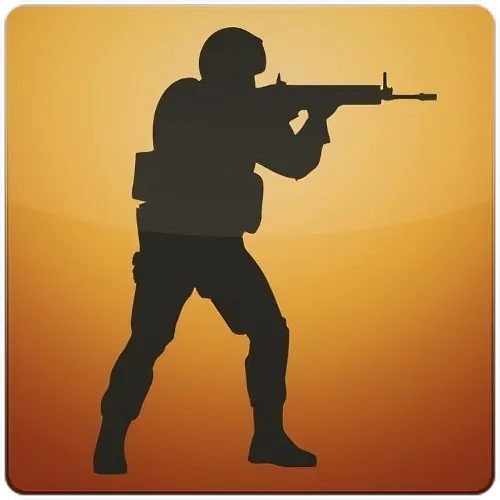
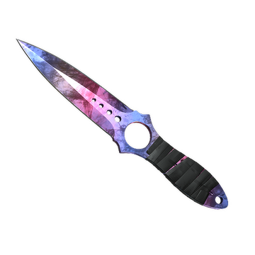

Skin Emporium
Singurul tău skin marketplace de încredere pentru cosmetice premium.
Dacă simți nevoia să-ți transformi radical colecția, noi te ajutăm. Poți pune la cale oferte și poți cumpara CS2 skins foarte repede pentru orice nou CS2 inventory.
Estetica Armelor și Uzură
Când analizezi vizual colecția de CS2 skins, acordă o atenție desăvârșită uzurii oficiale, deoarece coeficientul de float poate să reducă masiv prețul.
- Arme cu Foc (Pistols & Rifles)
- Adună modele de asalt iconice, pistoale sau puști cu lunetă de calibru major.
- Cutii, Knives, Gloves & Others
- Cuțite rar întâlnite și accesorii inegalabile pentru personajul tău virtual.

Vezi armele clasice prin galeria atașată din miniatură:

Sinteza Prețurilor Internaționale Estimate
| Arma de Bază | Numele Colecției | Treapta de Uzură | Cost Bază Estimativ (EUR) |
|---|---|---|---|
| Rifle - AK-47 | Redline | Field-Tested | 21.00 |
| Rifle - M4A4 | Howl | Factory New | 8500.00 |
| Sniper - AWP | Dragon Lore | Minimal Wear | 12000.00 |
| Pistol - USP-S | Kill Confirmed | Well-Worn | 31.00 |
| Pachet Surpriză Criptat Misterios (Orice armă) | 199.99 | ||
| Valoare Estimată a Coșului Actualizat | 20751.99 | ||